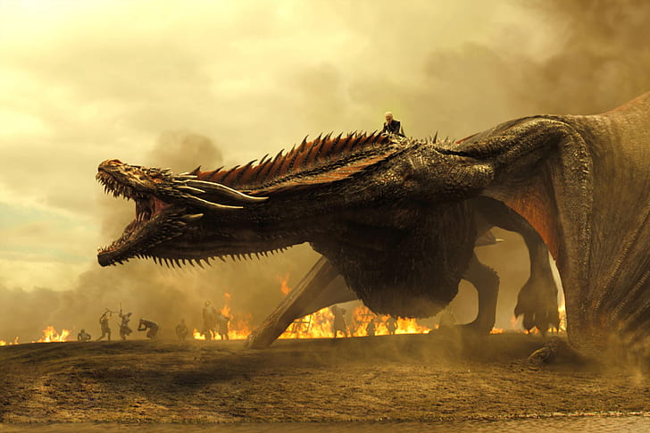

¿De que se basa Game of Thrones?
Sumérgete en los intrincados reinos de Westeros, donde las ambiciones son tan letales como las espadas
y el destino de todo un continente pende de un hilo. En esta épica historia, casas nobles como los Stark,
Lannister y Targaryen se enfrentan en una batalla por el Trono de Hierro, símbolo del poder absoluto. Pero
más allá de las conspiraciones políticas, los dragones de Daenerys Targaryen surcan los cielos y en el norte,
más allá del Muro, una amenaza ancestral despierta: los Caminantes Blancos.
Amor, venganza, honor y traición se entrelazan en una historia donde nadie está a salvo y las alianzas cambian
tan rápido como la dirección del viento. La serie combina todo lo que podrías desear en un drama épico:
batallas masivas, romances prohibidos, personajes complejos y giros inesperados que te dejarán sin aliento.
Aquí, el poder lo es todo, y en el juego de tronos, "o ganas o mueres".

Los personajes principales
Una serie tan vasta como Game of Thrones está repleta de personajes memorables. Aquí algunos de los más icónicos:
Jon Snow: El hijo bastardo de la casa Stark, criado en el norte, destinado a convertirse en uno de los héroes más inesperados. Valiente, noble y con un pasado oculto, es uno de los más entrañables y trágicos.

Daenerys Targaryen: La Madre de Dragones, la última descendiente de una dinastía caída que busca reclamar el Trono de Hierro con la ayuda
de sus tres poderosas criaturas. Su travesía de niña exiliada a reina temida es épica.

Tyrion Lannister: El enano más astuto y sarcástico de Westeros, siempre en conflicto con su propia familia, pero esencial en los giros del poder.
Su inteligencia es su mayor arma.

Cersei Lannister: Reina despiadada, manipuladora y ambiciosa, hará lo que sea por el poder y proteger a su familia, aunque su ambición termine por consumirla.

Arya Stark: La joven Stark que emprende una peligrosa travesía de venganza, convirtiéndose en una letal asesina. Un personaje cuya evolución es una de las más fascinantes.

Sansa Stark: La hija mayor de los Stark, que pasa de ser una inocente niña a una mujer calculadora, fuerte y capaz de manejar las intrigas políticas del juego de tronos.

Jaime Lannister: El "Matarreyes", un personaje complejo que comienza como villano, pero que evoluciona en formas inesperadas a lo largo de la serie.

Las casas principales de la serie
Las casas nobles son el núcleo de Game of Thrones. Cada una con su lema, estandarte y ambiciones, son fundamentales en la trama
Stark (Norte): "Winter is Coming" – Honorables, leales y resilientes, los Stark gobiernan el frío norte desde Winterfell. Siempre preparados para enfrentar la oscuridad que se avecina.

Casa Lannister (Roca Casterly): "Hear Me Roar" – Los ricos y poderosos Lannister gobiernan desde el oeste, famosos por su oro y su capacidad para manipular las circunstancias a su favor. Siempre pagan sus deudas.

Casa Targaryen (Desaparecida, Essos): "Fire and Blood" – Una vez reyes de Westeros, los Targaryen son conocidos por montar dragones. Exiliados durante mucho tiempo, buscan regresar al poder.

Casa Baratheon (Storm’s End): "Ours is the Fury" – Una casa orgullosa y guerrera, Baratheon fue clave en derrocar a los Targaryen y tomar el Trono de Hierro.

Casa Greyjoy (Islas del Hierro): "We Do Not Sow" – Los Greyjoy son piratas y saqueadores de las Islas del Hierro, que buscan expandir su influencia a través del mar.

Casa Martell (Dorne): "Unbowed, Unbent, Unbroken" – Desde el caluroso sur, los Martell son conocidos por su independencia y orgullo. Pocos se atreven a desafiar su honor.

Los dragones son los seres más majestuosos y temidos del mundo de Game of Thrones! Daenerys, la última Targaryen, crió a tres de ellos:
Drogon: El más grande, feroz y fiel a Daenerys. Su nombre es un tributo a Drogo, el difunto esposo de Dany.

Rhaegal: De color verde, nombrado en honor al hermano de Daenerys, Rhaegar Targaryen.
Viserion: De tonalidades crema y doradas, su nombre viene de Viserys, el hermano de Daenerys.
A medida que crecen, se vuelven armas vivientes, capaces de arrasar ejércitos y castillos enteros con su fuego. El vínculo entre Daenerys
y sus dragones es el corazón de su poder, simbolizando su legítima pretensión al trono.
Explora las Temporadas de Game of Thrones
Cada temporada de Game of Thrones nos sumerge más profundamente en los intrincados juegos de poder, traición y ambición que definen los Siete Reinos.
A lo largo de ocho temporadas, la serie ha ofrecido momentos inolvidables, batallas épicas y giros inesperados que han dejado a los espectadores en vilo.
Ya seas un veterano del mundo de Westeros o un nuevo explorador de este universo, aquí podrás descubrir cómo evolucionaron las historias y personajes a
lo largo de cada temporada. Sin spoilers y con las calificaciones más altas, te guiamos por los episodios más impactantes que marcaron un antes y un después
en la televisión. ¡Prepárate para revivir la intensidad de este fenómeno global!
Estas calificaciones son de IMDB, una de las plataformas más populares y confiables para reseñas de series y películas.
Mejor episodio: Baelor (Episodio 9)
Calificación: 9.6/10
Descripción: El momento que impactó al mundo, donde el destino de Ned Stark cambió todo. Esta episodio le da un giro dramático que estableció el tono oscuro e impredecible de la serie.
Mejor episodio: Blackwater (Episodio 9)
Calificación: 9.7/10
Descripción: La impresionante Batalla de Aguasnegras entre las fuerzas de Stannis Baratheon y el ejército de los Lannister en Desembarco del Rey es una de las primeras grandes secuencias de batalla de la serie.
Mejor episodio: The Rains of Castamere (Episodio 9)
Calificación: 9.9/10
Descripción: La Boda Roja. Pocos episodios en la televisión han dejado a los fans tan conmocionados como este. Este episodio es de los favoritos de los fans, este episodio dejo marcado a varios de sus espectadores
Mejor episodio: The Children (Episodio 10)
Calificación: 9.7/10
Descripción: El final de la temporada 4 muestra el enfrentamiento épico de Tyrion contra su padre y la batalla entre Bran y los Caminantes Blancos. Es uno de los finales de temporada más impactantes.
Mejor episodio: Hardhome (Episodio 8)
Calificación: 9.9/10
Descripción: La épica batalla en Hardhome contra los Caminantes Blancos fue uno de los momentos más visualmente impresionantes de la serie. Aquí Jon Snow se enfrenta cara a cara con el Rey de la Noche, marcando un punto de no retorno en la lucha contra los muertos.
Mejor episodio: Battle of the Bastards (Episodio 9)
Calificación: 9.9/10
Descripción: La Batalla de los Bastardos es considerada una de las mejores escenas de combate jamás vistas en televisión. La lucha entre Jon Snow y Ramsay Bolton por el control de Winterfell fue tan brutal como cinematográficamente perfecta.
Mejor episodio: The Spoils of War (Episodio 4)
Calificación: 9.8/10
Descripción: Daenerys finalmente entra en acción con sus dragones y arrasa el ejército Lannister en una escena impresionante de fuego y destrucción. Ver a Drogon en pleno ataque fue uno de los momentos más memorables de la temporada.
Mejor episodio: The Long Night (Episodio 3)
Calificación: 7.5/10
Descripción: Aunque la temporada final fue polémica, la Batalla de Winterfell contra los Caminantes Blancos fue un evento televisivo masivo. Sin embargo, la oscuridad de la cinematografía y las decisiones narrativas recibieron algunas críticas, lo que afectó su calificación.